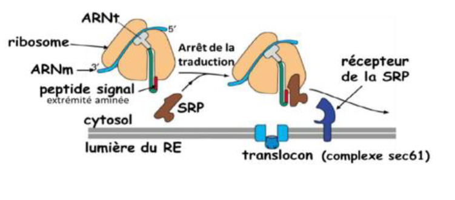

QCM : Le Système Endomembranaire
1. Quel est l'ensemble des compartiments intracellulaires limités par une membrane qui constitue le Système Endomembranaire (SEM) ?
Le Système Endomembranaire (SEM) est l'ensemble des compartiments intracellulaires limités par une membrane, incluant le Réticulum endoplasmique (RE) et l'Enveloppe nucléaire, l'Appareil de Golgi, les Endosomes et les Lysosomes, ainsi que toutes les vésicules permettant la communication entre ces compartiments et avec la membrane plasmique.
2. Quelles fonctions le Système Endomembranaire (SEM) assure-t-il dans la cellule ? (Plusieurs réponses possibles)
Le SEM assure la synthèse des protéines et des lipides, leur assemblage correct, leur tri et transport vers leur site cellulaire d'action, ainsi que la dégradation de substances pouvant avoir des effets nocifs.
3. Quelle est la principale différence structurale entre le Réticulum Endoplasmique Granulaire (REG) et le Réticulum Endoplasmique Lisse (REL) ?
Le REG (rugueux) est formé de saccules recouverts de ribosomes sur leur face cytosolique, d'où son aspect granulaire. Le REL est formé de zones tubulaires sans ribosomes.
4. Vrai ou Faux : Le Réticulum Endoplasmique Lisse (REL) est majoritaire dans les cellules produisant beaucoup de protéines.
Le Réticulum Endoplasmique Granulaire (REG/RER), avec ses ribosomes, est majoritaire dans les cellules produisant beaucoup de protéines. Le REL est plutôt abondant dans les cellules produisant beaucoup de lipides.
5. Par quel mécanisme la Protéine de reconnaissance du signal (SRP) arrête-t-elle momentanément la traduction d'une protéine destinée au REG ?
Le peptide signal d'une protéine destinée au REG est reconnu par la SRP, une protéine présente dans le cytoplasme. La fixation de la SRP sur le peptide signal et le ribosome provoque un blocage momentané de la traduction.
6. Vrai ou Faux : La face *trans* de l'Appareil de Golgi est orientée du côté du Noyau.
La face *cis* ou convexe de l'Appareil de Golgi (Réseau cis-golgien) est orientée du côté nucléaire (face au noyau). La face *trans* ou concave (Réseau trans-golgien) est orientée du côté du cytosol/membrane plasmique.
7. Selon le "Contrôle qualité" du REG, quel est le sort d'une protéine présentant un défaut de repliement ?
Toutes les protéines présentant un défaut de synthèse ou de repliement sont réexportées vers le cytosol pour y être détruites par les protéasomes (Contrôle négatif).
8. Quelles sont les principales modifications post-traductionnelles des protéines qui ont lieu dans l'Appareil de Golgi ? (Plusieurs réponses possibles)
L'Appareil de Golgi réalise diverses modifications post-traductionnelles, dont la glycosylation, la phosphorylation, la sulfatation, et les coupures protéolytiques.
9. Quelle est la fonction principale des Lysosomes ?
Les lysosomes sont les "appareils digestifs de la cellule". Leur fonction principale est la dégradation (hétérophagie et autophagie) de substrats endogènes et exogènes grâce à leurs hydrolases acides.
10. Vrai ou Faux : Les vésicules de transport COPII assurent le transport rétrograde du Golgi vers le Réticulum Endoplasmique (RE).
Les vésicules de transport **COPII** assurent le transport **antérograde** (centrifuge) du Réticulum Endoplasmique Granulaire (REG) vers le Golgi. C'est la **COPI** qui assure le transport rétrograde (centripète) des citernes du Golgi vers le REG.
11. Quel type d'hydrolases les lysosomes contiennent-ils et à quel pH ces enzymes ont-elles une activité optimale ?
Les lysosomes contiennent des hydrolases acides (protéases, nucléases, lipases, etc.) dont l'activité optimale est à un pH acide (environ 4,5), maintenu grâce à des pompes à protons dans leur membrane.
12. Dans le cas d'une protéine soluble destinée à la lumière du RE (protéine intraluminale), que devient son peptide signal après translocation ?
Pour les protéines solubles (destinées à la lumière du RE), le peptide signal est clivé par une signal peptidase intra-membranaire, libérant la protéine dans la lumière du RE.

13. Vrai ou Faux : Le transport antérograde (ou centrifuge) est aussi appelé la voie de l'endocytose.
Le transport **antérograde** (ou centrifuge : qui fuit le centre) est la voie **synthétique et sécrétoire** (REG → Golgi → lysosomes/membrane plasmique) ou la voie de l'**exocytose**. La voie de l'**endocytose** est un flux centripète ou rétrograde.
14. Dans la voie de la sécrétion contrôlée (régulée), quel facteur est nécessaire pour déclencher l'exocytose des vésicules de sécrétion ?
L'exocytose régulée (ou contrôlée) ne se produit que dans des cellules spécialisées (exocrine ou endocrine) et nécessite un signal extracellulaire (comme une hormone) pour déclencher le processus.
15. Quel rôle(s) est/sont spécifiquement associé(s) au Réticulum Endoplasmique Lisse (REL) ? (Plusieurs réponses possibles)
Le REL est spécialisé dans la biosynthèse des lipides, le stockage du calcium (très important dans les cellules musculaires) et la détoxification (grâce notamment au cytochrome p450).